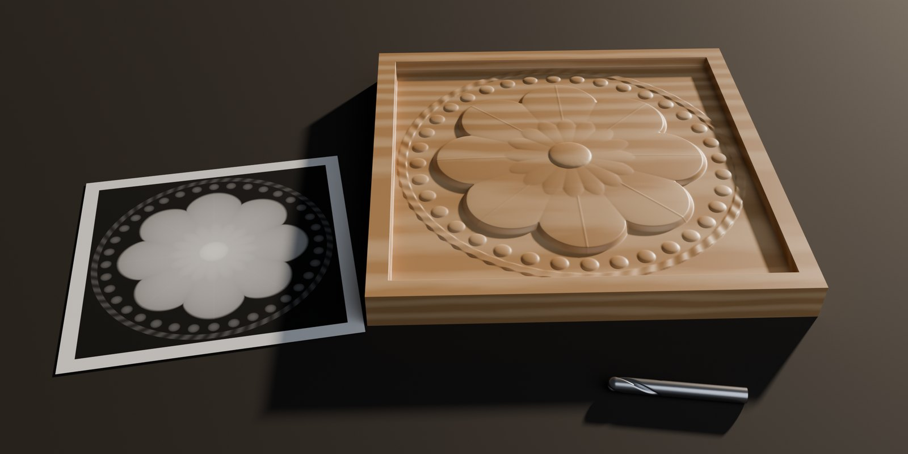
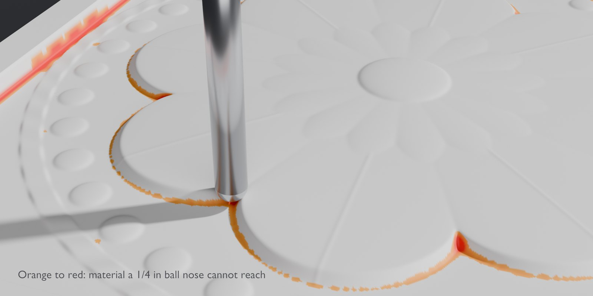
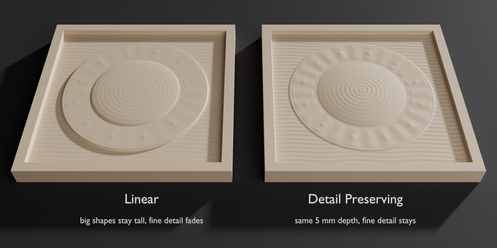
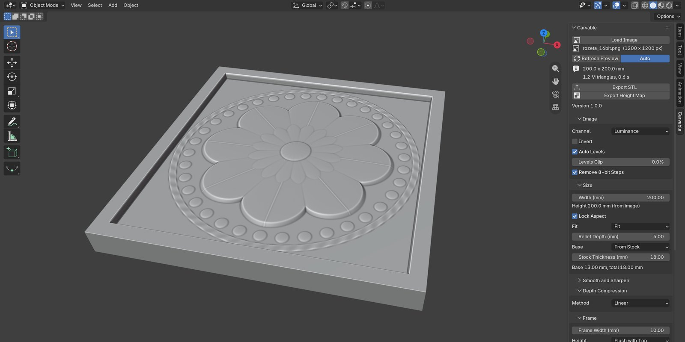
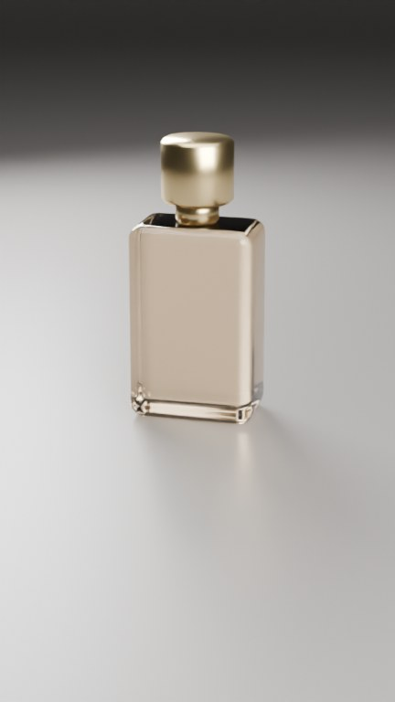
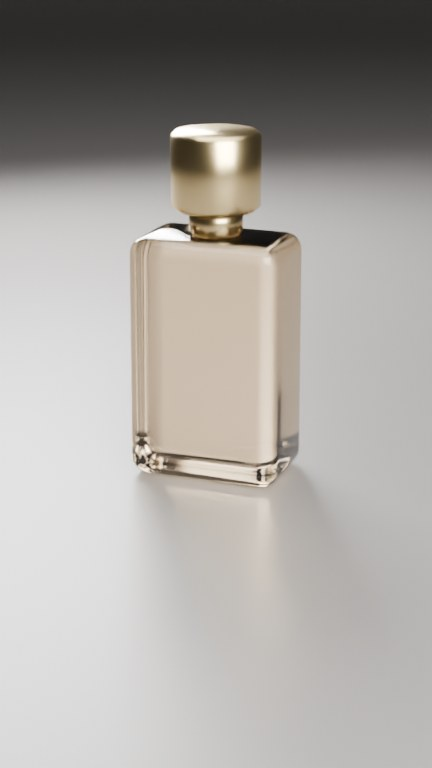
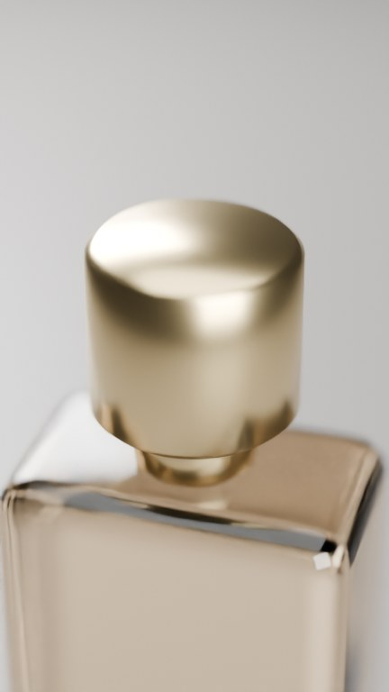

Larklock builds small, precise Blender add-ons for woodworkers, 3D-print makers and product artists. Every release is tested on the current Blender LTS versions and works fully offline.
hello@larklock.comTurns an image or height map into an exact bas-relief for CNC carving and 3D printing: sizes in millimetres, draft angles for tapered bits, a check of what your router bit can really carve, a closed STL and a 16-bit height map for your CAM program.

| Plate | 200 mm, 5 mm relief in 18 mm stock |
|---|---|
| Frame | 10 mm, flush with the top |
| Draft angle | 10° from vertical |
| Default bit | tapered ball nose, 0.79 mm (1/32″) tip, 5.4° per side |
| Live preview | ≈ 0.5 s per change (1200 × 1200 px image) |
| Export, 200 mm at 10 px/mm | ≈ 1 s, 0.2 GB memory |
| Export, 600 mm at 10 px/mm | ≈ 7 s, 1.7 GB memory |
| Automated tests | 84, on Blender 4.5.14 LTS and 5.2.2 LTS |
| Network | none: no license server, no telemetry |



Camera moves for product videos that frame the product by themselves. You choose a shot from a library of 14 (orbit, push-in, crane, detail pass, dolly zoom and more); the add-on computes the camera for every frame so the product sits inside the safe zone of each format, clear of the Reels and TikTok interface, whether it is a 2 cm ring or a 4.5 m car. A quality check lists any frame where something hides the product or the camera enters an object.



The code is written with an AI coding assistant (Claude by Anthropic), working to specifications written and approved by Larklock. Larklock chooses what to build and for whom, sets the goals and limits, reviews the results and makes the product decisions: scope, price, name and which camera shots go into the library. Every feature is covered by automated tests on Blender 4.5 and 5.2. The add-ons themselves contain no AI and work offline.